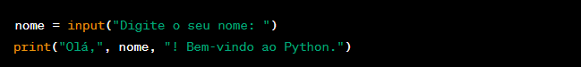
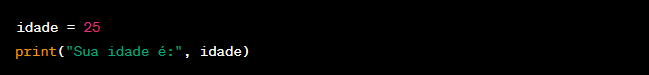

◉ Os comandos básicos de entrada e saída em Python permitem que você interaja com o usuário
e exiba informações na tela do computador. Em Python, os principais comandos para entrada
e saída são:
➤ input(): É usado para receber dados de entrada do usuário por meio do teclado.
Essa função permite que você leia uma linha de texto (entrada) fornecida pelo usuário,
e por padrão, o valor inserido é tratado como uma string.
Exemplo de uso do input():

Neste exemplo, o programa solicitará ao usuário que digite o nome, e a variável "nome" armazenará o valor digitado.
Em seguida, o programa imprimirá uma mensagem de boas-vindas usando o valor fornecido pelo usuário.
➤ print(): É usado para exibir informações na saída padrão,
geralmente na tela do computador. Essa função permite que
você mostre mensagens, valores de variáveis, números, etc.

Neste exemplo, a mensagem "Sua idade é:" será impressa, seguida pelo valor da variável "idade".
Exemplo de uso do print():